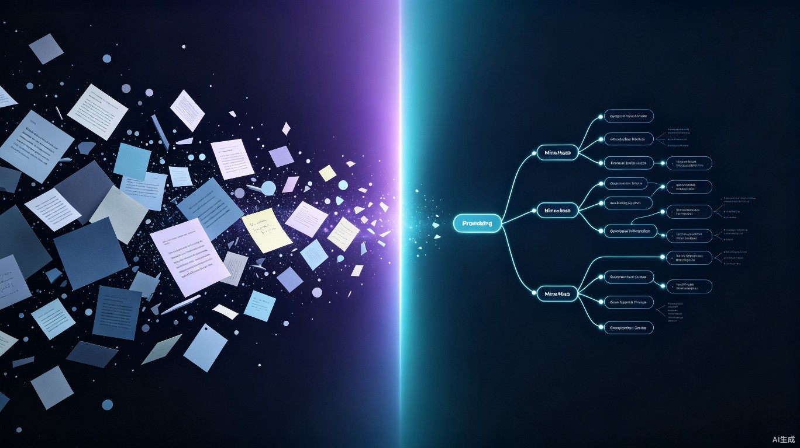

元神围绕碎片信息的完整生命周期，提供采集、整理、关联、召回四项核心能力，让信息"记得下、找得到、用得上"。
文字、语音、链接、图片，一句话或一个粘贴即可录入。无需预先选择笔记本或分类目录，输入即开始。
AI 读懂内容语义，自动判断信息类型、归入合适分类、打上恰当标签，无需用户手动维护分类体系。
自动将新信息与已有记录建立关联，把孤立的碎片串联成知识网络。每条信息都不再是孤岛，而是网络中的节点。
需要时以最合适的形式呈现——待办提醒、知识卡片、关联摘要，秒级触达。不再翻找，而是被精准送达。
传统笔记软件把整理工作留给用户，通用 AI 助手又不持有你的信息。元神把两者合一：它既懂你的内容，也替你整理。
| 传统笔记软件 | 通用 AI 助手 | 元神 | |
|---|---|---|---|
| 自动分类标签 | ✕ 手动维护 | ✕ 不持有信息 | ✓ AI 自动完成 |
| 信息间自动关联 | ✕ 需手动双链 | ✕ 无持久记忆 | ✓ 语义自动关联 |
| 长期沉淀个人知识 | ✓ 可以，但需整理 | ✕ 对话即遗忘 | ✓ 记下即整理好 |
| 按需精准召回 | ✕ 靠关键词翻找 | ✕ 无个人数据 | ✓ 语义搜索+提醒 |
| 记录零摩擦 | ✕ 先选目录标签 | △ 需复制粘贴 | ✓ 输入即开始 |
待办、灵感、摘录——不同类型的碎片信息，元神都能自动识别、归类并建立关联。
元神接管信息从输入到召回之间的所有整理工作，让记录的边际成本趋近于零。
flowchart LR
A["随手输入
文字·语音·链接·图片"] --> B["AI 语义解析
理解内容含义"]
B --> C["自动归类
判断类型·归入分类"]
C --> D["智能标签
提炼关键词"]
D --> E["建立关联
串联历史记录"]
E --> F["按需召回
提醒·卡片·摘要"]
style A fill:#1a2138,stroke:#22d3ee,stroke-width:2px,color:#e8ecf5
style B fill:#1a2138,stroke:#7c5cff,stroke-width:2px,color:#e8ecf5
style C fill:#1a2138,stroke:#7c5cff,stroke-width:2px,color:#e8ecf5
style D fill:#1a2138,stroke:#7c5cff,stroke-width:2px,color:#e8ecf5
style E fill:#1a2138,stroke:#7c5cff,stroke-width:2px,color:#e8ecf5
style F fill:#1a2138,stroke:#22d3ee,stroke-width:2px,color:#e8ecf5
不是笔记软件加了 AI，而是围绕碎片信息重新设计的个人信息中枢。
数据默认存储在本地设备，你的信息归你所有，不上传云端。
任意应用中一键呼出输入框，不打断当前工作流，灵感不逃逸。
AI 处理支持接入本地模型，敏感信息不出设备，兼顾智能与安全。
根据你对分类和标签的修正，持续优化后续的自动整理策略。
数据随时导出为 Markdown、JSON 等标准格式，不锁定，可迁移。
浏览器插件一键剪藏网页内容，自动提取正文并归入知识网络。
打开元神说一句或敲几个字，剩下的交给它。
讨论正酣时突然想到一个方案方向，一句话记下，元神自动归入对应项目并关联会议纪要。
读到值得留存的内容，复制粘贴即可，元神解析主题、归类并建立与已有笔记的关联。
突然想到要办的事，敲一行字，元神识别为待办、设定提醒，到点连同上下文一起推送。
随手记下，自动归位，需要时秒级召回。敬请期待。